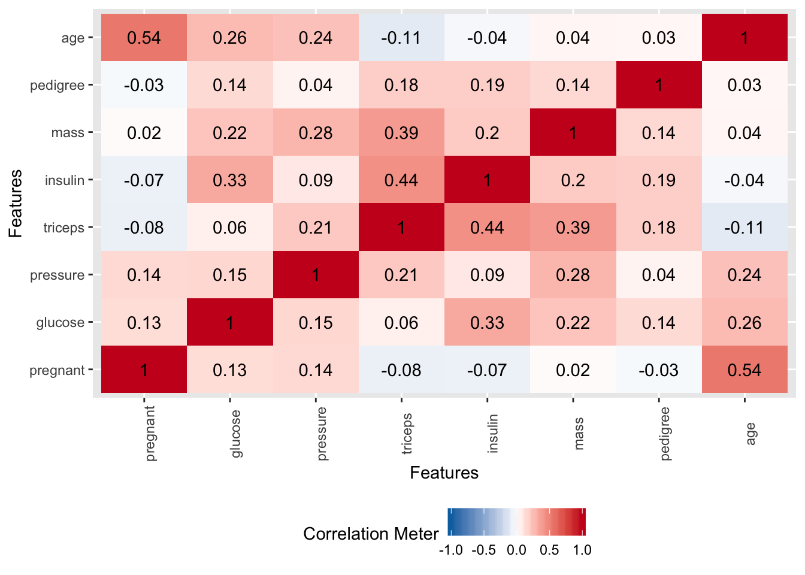
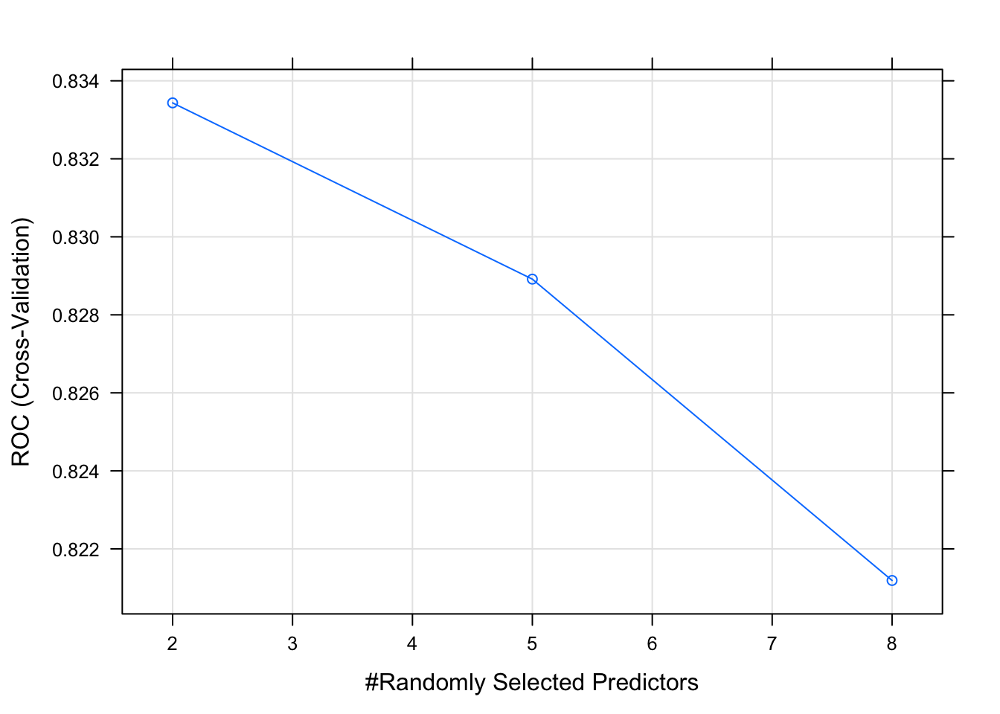
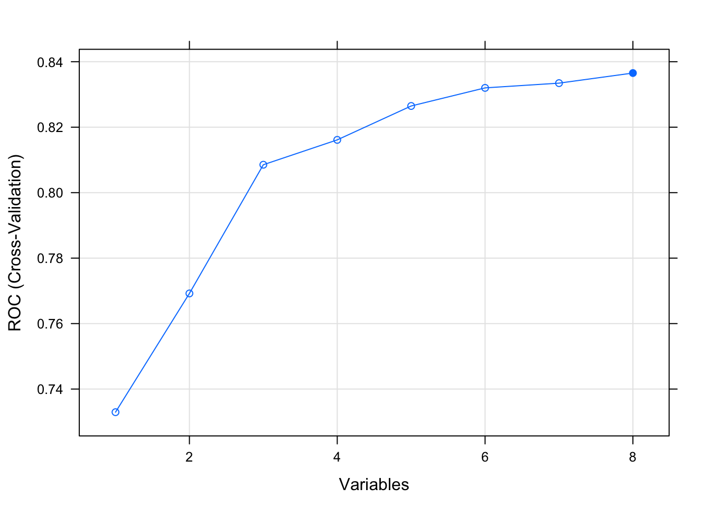

Chapter 2 Introduction
This lecture is concerned primarily with Predictive Modeling. In this domain there are generally two types of predictive models:
- Classification for Predicting Qualitative Outcomes:
This relates to situations such as whether someone has a disease (“positive”) or not (“negative”). The problem could also be multi classification such as assigning an organism to one of a number of possible species.
- Regression for Quantitative Out Comes
This is when we wish to predict a numeric / continuous outcome such as a final sales price for a house or car. It might also be a prediction of tomorrow’s stock or Bit Coin price.
2.1 Performance Metrics
For either of those cases we need some type of metric or measure to let us know how well a given model will work on new or unseen data - also known as “out of sample” data. for Classification problems we look at things like “sensitivity”, “specificity”, “accuracy”, and “Area Under Curve”. For Quantitative outcomes, we look at things like Root Mean Square Error (RMSE) or Mean Absolute Error (MAE). The selection of metric will frequently depend on your domain of interest.
2.2 In-Sample vs Out-Of-Sample Data
Independently of the metric, the goal of predictive model is to generate models that can generalize to new data. It would be good if any model we generate could provide a good estimate of out of sample error. It’s easy to generate a model on an entire data set (in sample data) and then turn around and use that data for prediction. But how will it perform on new data ? Haven’t we just over trained our model ?
2.3 A Practical Example
Let’s consider the Pima Indians Data that is part of the mlbench package. You can install this package via the Tools -> Install Package menu item within RStudio or type the following at the R console prompt:
install.packages("mlbench")Once you have it installed then load it into the work space as follows:
data("PimaIndiansDiabetes")
# Get a shorter handle. I hate typing.
pm <- PimaIndiansDiabetesThe description of the data set is as follows:

So we now have some data on which we can build a model. Specifically, there is a variable in the data called “diabetes” which indicates the disease / diabetes status (“pos” or “neg”) of the person. It would be good to come up with a model that we could use with incoming data to determine if someone has diabetes.
2.3.1 Important Terminology
In predictive modeling there are some common terms to consider:

2.3.2 Exploratory Plots
We’ll look use some stock plots from the DataExplorer package to get a feel for the data. Look at correlations between the variables to see if any are strongly correlated with the variable we wish to predict or any other variables.
plot_correlation(pm, type="continuous")
plot_bar(pm)plot_histogram(pm)plot_boxplot(pm,by="diabetes")2.4 A Common Modeling Workflow
The following graphic depicts the steps common to the Modeling Process. This is not the only way to proceed but it provides a very helpful schematic by which to plan your work.

2.5 Splitting The Data
A fundamental approach used in ML is to segment data into a “training” set which is some percentage of the original data - say 80%. The remaining 20% would be assigned to a “test” data set. Then we build a model on our training data set after which we use that model to predict outcomes for the test data set. This looks like the following.

Note that some scenarios will split the data into three data sets: 1) training, 2) validation, and 3) test. This scenario is used when tuning so called hyper parameters for methods that have “tuning” parameters that could influence the resulting model. We’ll stick with the basic “train / test” approach for now.
Splitting the data is not particularly challenging. We can use the built in sample function in R to do this. We aren’t sampling with replacement here which guarantees that no record can exist in both sets. That is, if a record from the data set is assigned to the training set, it will not be in the test data set.
# Make this example reproducible
set.seed(123)
percent <- .80
# Get the indices for a training set.
idx <- sample(1:nrow(pm),round(.8*nrow(pm)),F)
# Use bracket notation to create the train / test pair
train <- pm[idx,]
test <- pm[-idx,]
# The following should have 80 percent of the original
# data
round(nrow(train)/nrow(pm)*100)## [1] 802.6 First Model
Now let’s build a Generalized Linear Model to do the prediction. We will employ logistic regression.
myglm <- glm(diabetes ~ .,
data = train,
family = "binomial")
summary(myglm)##
## Call:
## glm(formula = diabetes ~ ., family = "binomial", data = train)
##
## Deviance Residuals:
## Min 1Q Median 3Q Max
## -2.3941 -0.7235 -0.4285 0.7476 3.0031
##
## Coefficients:
## Estimate Std. Error z value Pr(>|z|)
## (Intercept) -8.2308564 0.7816436 -10.530 < 2e-16 ***
## pregnant 0.1138202 0.0366475 3.106 0.00190 **
## glucose 0.0366854 0.0041947 8.746 < 2e-16 ***
## pressure -0.0131360 0.0059415 -2.211 0.02704 *
## triceps -0.0006303 0.0075466 -0.084 0.93343
## insulin -0.0017394 0.0009826 -1.770 0.07667 .
## mass 0.0847273 0.0161080 5.260 1.44e-07 ***
## pedigree 0.9057850 0.3329203 2.721 0.00651 **
## age 0.0120925 0.0107367 1.126 0.26005
## ---
## Signif. codes: 0 '***' 0.001 '**' 0.01 '*' 0.05 '.' 0.1 ' ' 1
##
## (Dispersion parameter for binomial family taken to be 1)
##
## Null deviance: 790.13 on 613 degrees of freedom
## Residual deviance: 581.40 on 605 degrees of freedom
## AIC: 599.4
##
## Number of Fisher Scoring iterations: 5In looking at the output we see some problems such as a number of predictors aren’t significant so maybe we should eliminate them from the model. For now, we’ll keep going because we are trying to outline the larger process / workflow.
2.6.1 First Prediction
We could now use this new model to predict outcomes using the test data set. Remember that we are attempting to predict a binary outcome - in this case whether the person is positive for diabetes or negative.
What we get back from the prediction object are probabilities for which we have to determine a threshold above which we would say the observation is “positive” for diabetes and, below the threshold, “negative”.
probs <- predict(myglm,
newdata = test,
type = "response")
probs[1:10]## 2 3 9 12 13 17 18
## 0.0503311 0.8208652 0.6680994 0.9016430 0.7766679 0.3361188 0.2029466
## 23 25 31
## 0.9453408 0.6693923 0.4026717With logistic regression we are dealing with a curve like the one below which is a sigmoid function. The idea is to take our probabilities, which range between 0 and 1, and then pick a threshold over which we would classify that person as being positive for diabetes.

The temptation is to select 0.5 as the threshold such that if a returned probability exceeds 0.5 then we classify the associated subject as being “positive” for the disease. But then this assumes that the probabilities are distributed accordingly. This is frequently not the case though it doesn’t stop people from using 0.5.
We might first wish to look at the distribution of the returned probabilities before making a decision about where to set the threshold. We can see clearly that selecting 0.5 in this case would not be appropriate.
boxplot(probs,
main="Probabilities from our GLM Model")
grid()
The median is somewhere around .25 so we could use that for now although we are just guessing.
mypreds <- ifelse(probs > 0.25,"pos","neg")
mypreds <- factor(mypreds, levels = levels(test[["diabetes"]]))
mypreds[1:10]## 2 3 9 12 13 17 18 23 25 31
## neg pos pos pos pos pos neg pos pos pos
## Levels: neg pos2.6.2 Confusion Matrices
Next, we would compare our predictions against the known outcomes which are stored in the test data frame:
# How does this compare to the truth ?
table(predicted = mypreds,
actual = test$diabetes)## actual
## predicted neg pos
## neg 60 7
## pos 37 50What we are doing is building a “Confusion Matrix” which can help us determine how effective our model is. From such a matrix table we can compute a number of “performance measures”, such as accuracy, precision, sensitivity, specificity and others, to help assess the quality of the model. In predictive modeling we are always interested in how well any given model will perform on “new” data.
There are some functions that can help us compute a confusion matrix. Because the variable we are trying to predict, (diabetes), is a two level factor, (“neg” or “pos”) we’ll need to turn our predictions into a comparable factor. Right now, it’s just a character string.
# test$diabetes <- ordered(test$diabetes,c("pos","neg"))
mypreds <- factor(mypreds,
levels=levels(test$diabetes))
caret::confusionMatrix(mypreds,test$diabetes,positive="pos")## Confusion Matrix and Statistics
##
## Reference
## Prediction neg pos
## neg 60 7
## pos 37 50
##
## Accuracy : 0.7143
## 95% CI : (0.636, 0.7841)
## No Information Rate : 0.6299
## P-Value [Acc > NIR] : 0.01718
##
## Kappa : 0.4472
##
## Mcnemar's Test P-Value : 1.232e-05
##
## Sensitivity : 0.8772
## Specificity : 0.6186
## Pos Pred Value : 0.5747
## Neg Pred Value : 0.8955
## Prevalence : 0.3701
## Detection Rate : 0.3247
## Detection Prevalence : 0.5649
## Balanced Accuracy : 0.7479
##
## 'Positive' Class : pos
## 2.6.3 Performance Measures
This is helpful stuff although there are a number of measures to select as a primary performance metric. Ideally, we would already know which performance metric we would select to effectively “judge” the quality of our model. In medical tests, “sensitivity” and “specificity” are commonly used. Some applications use “Accuracy” (which isn’t good when there is large group imbalance). Anyway, if, for example, we pick “sensitivity” as a judge of model quality we see that is somewhere around .87. (A much deeper discussion about selecting the best performance measure is in order but we’ll keep moving for mow)
The problem here is that all we have done is looked at the confusion matrix corresponding to one specific (and arbitrary) threshold value when what we need is to look at a number of confusion matrices corresponding to many different thresholds. For example, we might get a better sensitivity level had we selected the mean of the returned probabilities. This process could go on and on and on… So we would benefit from a rigorous approach to find the “best” threshold.
2.6.4 The ROC curve
One way to do this is to use something known as the ROC curve. Luckily, R has functions to do this. This isn’t surprising as it is a standard tool that has been in use for decades long before the hype of AI and ML was around. The ROC curve gives us a “one stop shop” for estimating a value of alpha that results in maximal area under a curve.
In fact, maximizing the area under a given ROC curve winds up being an effective way to judge the differences between one method and another. So, if we wanted to compare the glm model against a Support Vector Machine model, we could use the respective AUC (Area Under Curve) metric to help us. This isn’t the only way to do this but it’s reasonable for now.
pred <- ROCR::prediction(predictions = probs,
labels = test$diabetes)
perf <- performance(pred,
"tpr",
"fpr")
plot(perf,colorize=T,
print.cutoffs.at=seq(0,1,by=0.1),
lwd=3,las=1,main="Cool ROC Curve")
abline(a = 0, b = 1)
grid()
myroc <- performance(pred,measure="auc")
myroc@y.values[[1]]## [1] 0.8507868So what value of alpha corresponds to the stated max AUC of .80 ? We’ll have to dig into the performance object to get that but it looks to be between 0.30 and 0.40. Note that this is somewhat academic since knowing the max AUC alone helps us decide if our model is any “good”. For completeness we could use another R function to nail this down:
library(pROC)
proc <- roc(test$diabetes,probs)
round(coords(proc, "b", ret="t", transpose = FALSE),2)## [1] 0.352.6.5 Other Methods ?
Well, we could use another method to see if it yields better performance as determined by the AUC ? Let’s use the ranger function which is a fast implementation of random forests. One thing you will notice is that we need to include the “probability” argument in the call to ranger to get the necessary probabilities for computing the AUC. This is one of the aggravations with using different functions. They all have their own peculiar way of doing things.
library(ranger)
ranger_mod <- ranger(diabetes ~ .,
data = train,
probability = TRUE,mtry=4)
# Returns probabilities
ranger_pred <- predict(ranger_mod,data=test)
myroc <- roc(test$diabetes,
ranger_pred$predictions[,2])
myroc$auc## Area under the curve: 0.8502pred <- ROCR::prediction(ranger_pred$predictions[,2],
test$diabetes)
perf <- performance(pred,
"tpr",
"fpr")
plot(perf,colorize=T,
print.cutoffs.at=seq(0,1,by=0.1),
lwd=3,las=1,main="Cool ROC Curve")
abline(a = 0, b = 1)
grid()
rroc <- performance(pred,measure="auc")
rroc@y.values[[1]]## [1] 0.8502442It turns out that this didn’t appear to improve things - at least with one invocation of the method.
2.7 Improving The Model(s)
We haven’t accomplished very much here because we need to look at multiple versions of the data in case we sampled a number of outliers in the creation of our training data. Or, maybe we have excluded a large number of outliers in the training set so they wound up in the test data set which means that the predictive power of our model isn’t as robust as it should be.
Our next steps should involve creating multiple versions of the training and test pairs (say 3 times), compute the optimal AUC, and then look at how those values vary for each of those individual versions. If the AUCs vary widely then maybe our model is over training. If it’s not varying widely, it could be that that the model has high bias.
2.7.1 Cross Fold Validation
This is a method that gives us multiple estimates of out-of-sample error, rather than a single estimate. In particular, we’ll use an approach called “K-Fold Cross Validation” where we will partition our data into 3 individual “folds”" which are basically equal in size. Then we’ll create a loop that does the following:
- Combines 2 of the folds into a training data set
- Builds a model on the combined 2-folds data
- Applies the model to holdout fold
- Computes the AUC value and stores it
Each fold is simply a portion of the data. We’ll generate a list called “folds” that contains 3 elements each of which are 256 index elements corresponding to rows in pm. The way we did the sample insures that each row shows up only in one fold.

To drive this home, and in case the graphic didn’t help, consider the following simple data frame:
## id m1 m2 m3
## 1 a1 0.89 0.36 0.10
## 2 b2 0.75 0.27 0.22
## 3 c3 0.98 0.85 0.95
## 4 d4 0.04 0.36 0.75
## 5 e5 0.90 0.30 0.82
## 6 f6 0.87 0.76 0.42
## 7 g7 0.78 0.84 0.59
## 8 h8 0.38 0.46 0.80
## 9 i9 0.04 0.73 0.89If we created three folds out of this data frame it would look like the following:
Here is our function to implement the K-Fold validation. It’s pretty straightforward to define in terms of coding though it winds up being somewhat specific to the particular method we are using.
cross_fold <- function(numofolds = 3) {
# Function to Do Cross fold validation
# Split the data into K folds (numofolds)
folds <- split(sample(1:nrow(pm)),1:numofolds)
# We setup some blank lists to stash results
folddf <- list() # Contains folds
modl <- list() # Hold each of the K models
predl <- list() # Hold rach of the K predictions
auc <- list() # Hold the auc for a given model
# Create a formula that can be used across multiple
# iterations through the loop.
myform <- "diabetes ~ ."
for (ii in 1:length(folds)) {
# This list holds the actual model we create for each of the
# 10 folds
modl[[ii]] <- glm(formula = myform,
data = pm[-folds[[ii]],],
family = "binomial"
)
# This list will contain / hold the models build on the fold
predl[[ii]] <- predict(modl[[ii]],
newdata=pm[folds[[ii]],],
type="response")
# This list will hold the results of the AUC per iteration
pred <- ROCR::prediction(predl[[ii]],
pm[folds[[ii]],]$diabetes)
roc <- performance(pred,measure="auc")
auc[[ii]] <- roc@y.values[[1]]
}
return(unlist(auc))
}Running this is now quite simple. By default, this function will loop three times corresponding to the number of folds. During each iteration it will:
- use glm to build a model on the training folds
- create a prediction object using the training fold
- compute the underlying AUC associated with the prediction
- store the AUC in a vector
At the end of the function, the vector containing the computed AUCs will be returned.
cross_fold()## [1] 0.8628023 0.8050426 0.8115884# Use more folds
cross_fold(8)## [1] 0.7619048 0.8842505 0.8476583 0.8727273 0.8866224 0.7475586 0.8633959
## [8] 0.7528463We could take the average of the AUCs to get a sense of how well this method would apply to unseen data.
stripplot(cross_fold(8),
main="AUC values for K-Fold Validation",
type=c("g","p"),pch=19,cex=1.5)
2.7.2 Is There a Better Way ?
In R, as well as with Python, there are a growing number of packages available to help simplify repetitive processes. Building predictive models is no exception especially given that so many sub processes are involved such as splitting data, building a model, making a prediction, comparing it to the labelled data, and so on. The caret package provides an easy point of entry into the world of predictive modeling. It provides the following features:
- Streamlined and consistent syntax for more than
200 different models
- Can implement any of the 238 different methods using a single function
- Easy data splitting to simplify the creation of train / test pairs
- Realistic model estimates through built-in resampling
- Convenient feature importance determination
- Easy selection of different performance metrics (e.g. "ROC","Accuracy", "Sensitivity")
- Automated and semi-automated parameter tuning
- Simplifed comparison of different modelsThe caret package was designed specifically for predictive modeling and, in particular, to provide an intuitive approach to creating, managing, and comparing different models emerging from various methods. Let’s work through our previous examples using functions from caret.
2.7.3 Data Splitting Using Caret
Let’s split the data into a training / test pair. The caret package provides some useful functions for this one of which is the CreateDataPartion function.
idx <- createDataPartition(pm$diabetes,
p=.80,
list=FALSE)
Train <- pm[idx,]
Test <- pm[-idx,]
nrow(Train)## [1] 615Now we can use this to create a training object with caret. We’ll create a GLM model similar to the one we’ve already created. The primary, and most frequently used, function in caret is the train function. In this example we’ll use it build a model using the glm method. We will also specify that “Accuracy” will be the preferred performance measure.
myglm_caret <- train(diabetes ~ .,
data = Train,
method = "glm",
metric = "Accuracy")
myglm_caret## Generalized Linear Model
##
## 615 samples
## 8 predictor
## 2 classes: 'neg', 'pos'
##
## No pre-processing
## Resampling: Bootstrapped (25 reps)
## Summary of sample sizes: 615, 615, 615, 615, 615, 615, ...
## Resampling results:
##
## Accuracy Kappa
## 0.7690868 0.47168282.7.4 Specifying Control Options
We can even request cross fold validation without having to write our own function to do this. To do this requires the specification of a “control” object which contains information that we would like for the train function to consider as it does its work.
Not every invocation of train requires an associated trainControl object although as you become more experienced building models, you will frequently use this approach.
control <- trainControl(method = "cv", number = 5)
myglm_caret <- train(diabetes ~ .,
data = Train,
method = "glm",
metric = "Accuracy",
trControl = control)
myglm_caret## Generalized Linear Model
##
## 615 samples
## 8 predictor
## 2 classes: 'neg', 'pos'
##
## No pre-processing
## Resampling: Cross-Validated (5 fold)
## Summary of sample sizes: 492, 492, 492, 492, 492
## Resampling results:
##
## Accuracy Kappa
## 0.7674797 0.46435532.7.5 Inspecting The Model
The object returned by caret has a great deal of information packed into it much of which is there to support reproducibility. Some key aspects of the object include, in this case, the Accuracy computation for each fold.
myglm_caret$resample## Accuracy Kappa Resample
## 1 0.7886179 0.5249554 Fold1
## 2 0.7317073 0.3582609 Fold2
## 3 0.7479675 0.4366967 Fold3
## 4 0.7967480 0.5249498 Fold4
## 5 0.7723577 0.4769137 Fold5myglm_caret$results## parameter Accuracy Kappa AccuracySD KappaSD
## 1 none 0.7674797 0.4643553 0.02732965 0.06986202# Note that the final reported Accuracy metric is simply the average of
# the reported Accuracy values for each fold
myglm_caret$results[2] == mean(myglm_caret$resample$Accuracy)## Accuracy
## 1 TRUEOf course, you can always look at the model itself to get summary information just as you could if you were not using the train function. That is, the caret package does not try to conceal or replace what could be done using standard approaches. It overlays the model with information in a way that is transparent.
summary(myglm_caret)##
## Call:
## NULL
##
## Deviance Residuals:
## Min 1Q Median 3Q Max
## -2.6911 -0.7180 -0.3816 0.6973 2.8206
##
## Coefficients:
## Estimate Std. Error z value Pr(>|z|)
## (Intercept) -8.8332681 0.8384820 -10.535 < 2e-16 ***
## pregnant 0.1341329 0.0361450 3.711 0.000206 ***
## glucose 0.0375576 0.0042350 8.868 < 2e-16 ***
## pressure -0.0169135 0.0059964 -2.821 0.004793 **
## triceps 0.0001766 0.0078457 0.023 0.982042
## insulin -0.0011989 0.0009865 -1.215 0.224263
## mass 0.0956998 0.0175534 5.452 4.98e-08 ***
## pedigree 1.0844179 0.3381365 3.207 0.001341 **
## age 0.0168712 0.0105600 1.598 0.110120
## ---
## Signif. codes: 0 '***' 0.001 '**' 0.01 '*' 0.05 '.' 0.1 ' ' 1
##
## (Dispersion parameter for binomial family taken to be 1)
##
## Null deviance: 796.05 on 614 degrees of freedom
## Residual deviance: 563.38 on 606 degrees of freedom
## AIC: 581.38
##
## Number of Fisher Scoring iterations: 52.7.6 How Well Did It Perform ?
Remember that one of the features of using caret is that it can help us estimate the out of sample error we will experience when applying our model to new or unseen data. The above model provides an estimate of out of band accuracy as .77
myglm_caret## Generalized Linear Model
##
## 615 samples
## 8 predictor
## 2 classes: 'neg', 'pos'
##
## No pre-processing
## Resampling: Cross-Validated (5 fold)
## Summary of sample sizes: 492, 492, 492, 492, 492
## Resampling results:
##
## Accuracy Kappa
## 0.7674797 0.4643553Let’s create a prediction object using the Test data to see how close we came to this estimate. It’s bad and it’s a little worse than caret’s estimate which is to be expected. Also, this is just an estimate using a single threshold when using the predict function. There are more sophisticated ways to estimate the accuracy.
mypreds_glm <- predict(myglm_caret, Test)
# Create a Table of known outcomes vs the predicted outcomes
outcome <- table(preds=mypreds_glm,actual=Test$diabetes)2.7.7 Comparing Performance Across Other Methods
The advantage of the train function is that we can use the same control objects across a number of modeling techniques which then makes it easier to compare performance across various methods.
As an example, instead of using the “glm” method we could pick another one such as Decision Tree. All we need to know is the name of the method we want. A complete list of supported models listed by category can be found here
control <- trainControl(method = "cv", number = 5)
myrpart_caret <- train(diabetes ~ .,
data = Train,
method = "rpart",
metric = "Accuracy",
trControl = control)
myrpart_caret## CART
##
## 615 samples
## 8 predictor
## 2 classes: 'neg', 'pos'
##
## No pre-processing
## Resampling: Cross-Validated (5 fold)
## Summary of sample sizes: 492, 492, 492, 492, 492
## Resampling results across tuning parameters:
##
## cp Accuracy Kappa
## 0.01162791 0.7398374 0.4308597
## 0.03100775 0.7528455 0.4159712
## 0.29302326 0.6975610 0.1993799
##
## Accuracy was used to select the optimal model using the largest value.
## The final value used for the model was cp = 0.03100775.This method employs a Decision Tree approach which also involves use of “hyper parameters”. However, at this point we don’t really need to know much about those (although we should) when selecting the method. The larger point is that all we need to know is the name of the alternative method and we can reuse the previous control object.
2.7.8 Different Performance Measures
Not only can we easily select different methods we can also select different performance measures. It does require changes to the control object and arguments to the train function though we do not need to read the underlying help pages for a given method to do this. This is a true convenience and time saver that makes reproducing these experiments much easier.
In this example we want to use the “Area Under Curve” (AUC) metric that comes from an associated ROC curve. To do this will require the model to generate class probabilities from which to build the ROC curve so this information needs to be specified in the control object.
control <- trainControl(classProbs = TRUE,
summaryFunction = twoClassSummary,
method = "cv",
number = 8)
myglm_caret_roc <- train(diabetes ~ .,
data = Train,
method = "glm",
metric = "ROC",
trControl = control)
myglm_caret_roc## Generalized Linear Model
##
## 615 samples
## 8 predictor
## 2 classes: 'neg', 'pos'
##
## No pre-processing
## Resampling: Cross-Validated (8 fold)
## Summary of sample sizes: 538, 538, 539, 538, 538, 538, ...
## Resampling results:
##
## ROC Sens Spec
## 0.8435613 0.87 0.6000712This is a true convenience and we don’t have to use a separate R package to compute the AUC. It becomes a by product of the modeling process.
control <- trainControl(classProbs = TRUE,
summaryFunction = twoClassSummary)
myglm <- train(diabetes ~ .,
data = Train,
method = "glm",
metric = "ROC",
trControl = control)
myglm## Generalized Linear Model
##
## 615 samples
## 8 predictor
## 2 classes: 'neg', 'pos'
##
## No pre-processing
## Resampling: Bootstrapped (25 reps)
## Summary of sample sizes: 615, 615, 615, 615, 615, 615, ...
## Resampling results:
##
## ROC Sens Spec
## 0.8406046 0.8802542 0.583543control <- trainControl(classProbs = TRUE,
summaryFunction = twoClassSummary,
method = "cv",
number = 8)
myglm_caret_roc <- train(diabetes ~ .,
data = Train,
method = "glm",
metric = "ROC",
trControl = control)
myglm_caret_roc## Generalized Linear Model
##
## 615 samples
## 8 predictor
## 2 classes: 'neg', 'pos'
##
## No pre-processing
## Resampling: Cross-Validated (8 fold)
## Summary of sample sizes: 538, 539, 538, 538, 538, 538, ...
## Resampling results:
##
## ROC Sens Spec
## 0.846339 0.88 0.5997151Specifically, the control object can remain the same across different methods assuming that we wish to continue with classification. Here, we’ll use Random Forests which are a generalization beyond a single Decision Tree.
# The following is the same control object from before
control <- trainControl(classProbs = TRUE,
summaryFunction = twoClassSummary,
method = "cv",
number = 8)
# We'll
myrf_caret <- train(diabetes ~ .,
data = Train,
# method = "svmLinear",
method = "rf",
metric = "ROC",
trControl = control)
myrf_caret## Random Forest
##
## 615 samples
## 8 predictor
## 2 classes: 'neg', 'pos'
##
## No pre-processing
## Resampling: Cross-Validated (8 fold)
## Summary of sample sizes: 538, 538, 538, 538, 538, 538, ...
## Resampling results across tuning parameters:
##
## mtry ROC Sens Spec
## 2 0.8334348 0.8475 0.6047009
## 5 0.8289156 0.8325 0.6095085
## 8 0.8211895 0.8150 0.6324786
##
## ROC was used to select the optimal model using the largest value.
## The final value used for the model was mtry = 2.plot(myrf_caret)
2.7.9 Feature Importance
Another advantage of using the caret train function is that it provides a method to determine variable importance. This is useful when considering what features to include or not when building a model. If we summarize a given model, our myglm_caret model, we’ll see that some of our predictors are not significant.
We could use the varImp to use statistics generated by the specific modeling process itself. For more complex modeling techniques this winds up being very useful since digging into the model diagnostics can be daunting - although quite useful.
varImp(myglm_caret)## glm variable importance
##
## Overall
## glucose 100.00
## mass 61.38
## pregnant 41.70
## pedigree 36.00
## pressure 31.63
## age 17.81
## insulin 13.48
## triceps 0.00If you wanted to see how the different models rates the significance of predictor variables then you can easily plot them.
library(gridExtra)##
## Attaching package: 'gridExtra'## The following object is masked from 'package:dplyr':
##
## combinep1 <- plot(varImp(myglm_caret),main="varImp for glm")
p2 <- plot(varImp(myrf_caret),main="varImp for Rf")
grid.arrange(p1,p2,ncol=2)2.7.10 Feature Elimination
The caret package also supports “recursive feature elimination” which automates the selection of optimal features. This can be controversial since such a process could work at the expense of important statistical considerations. However, it remains a tool in the Machine Learning toolbox. Let’s work though an example of this using caret functions. First, we’ll remove highly correlated predictor variables from consideration.
correlationMatrix <- cor(pm[,1:8])
# summarize the correlation matrix
print(correlationMatrix)## pregnant glucose pressure triceps insulin
## pregnant 1.00000000 0.12945867 0.14128198 -0.08167177 -0.07353461
## glucose 0.12945867 1.00000000 0.15258959 0.05732789 0.33135711
## pressure 0.14128198 0.15258959 1.00000000 0.20737054 0.08893338
## triceps -0.08167177 0.05732789 0.20737054 1.00000000 0.43678257
## insulin -0.07353461 0.33135711 0.08893338 0.43678257 1.00000000
## mass 0.01768309 0.22107107 0.28180529 0.39257320 0.19785906
## pedigree -0.03352267 0.13733730 0.04126495 0.18392757 0.18507093
## age 0.54434123 0.26351432 0.23952795 -0.11397026 -0.04216295
## mass pedigree age
## pregnant 0.01768309 -0.03352267 0.54434123
## glucose 0.22107107 0.13733730 0.26351432
## pressure 0.28180529 0.04126495 0.23952795
## triceps 0.39257320 0.18392757 -0.11397026
## insulin 0.19785906 0.18507093 -0.04216295
## mass 1.00000000 0.14064695 0.03624187
## pedigree 0.14064695 1.00000000 0.03356131
## age 0.03624187 0.03356131 1.00000000# find attributes that are highly corrected
# (ideally >0.75)
highlyCorrelated <- findCorrelation(correlationMatrix,
cutoff=0.5)
# print indexes of highly correlated attributes
print(highlyCorrelated)## [1] 82.7.11 The rfe Function
Let’s apply the RFE method on the Pima Indians Diabetes data set. The algorithm is configured to explore all possible subsets of the attributes. All 8 attributes are selected in this example, although in the plot showing the accuracy of the different attribute subset sizes, we can see that just 4 attributes gives almost comparable results
rfFuncs$summary <- twoClassSummary
control <- rfeControl(functions=rfFuncs,
method="cv",
number=8)
# run the RFE algorithm
results <- rfe(pm[,1:8],
pm[,9],
sizes=c(1:8),
rfeControl=control,
metric="ROC")
# summarize the results
print(results)##
## Recursive feature selection
##
## Outer resampling method: Cross-Validated (8 fold)
##
## Resampling performance over subset size:
##
## Variables ROC Sens Spec ROCSD SensSD SpecSD Selected
## 1 0.7329 0.8580 0.4367 0.05447 0.03128 0.07988
## 2 0.7692 0.8218 0.5556 0.04496 0.05580 0.09313
## 3 0.8085 0.8360 0.5183 0.06020 0.07023 0.10237
## 4 0.8161 0.8279 0.5856 0.06796 0.08844 0.10745
## 5 0.8265 0.8459 0.5969 0.05945 0.08339 0.11810
## 6 0.8320 0.8539 0.5893 0.05828 0.06952 0.11063
## 7 0.8335 0.8519 0.5820 0.05318 0.06846 0.09893
## 8 0.8365 0.8660 0.5930 0.04717 0.06331 0.11530 *
##
## The top 5 variables (out of 8):
## glucose, mass, age, pregnant, insulin# list the chosen features
predictors(results)## [1] "glucose" "mass" "age" "pregnant" "insulin" "pedigree"
## [7] "triceps" "pressure"# plot the results
plot(results, type=c("g", "o"))
2.7.12 Comparing Models
One of the more frequent activities in Machine Learning relates to setting up “shoot ours” between different models to see which one will perform the best. This is something we could do without caret but the package does help accomplish this using a standard interface. We’ll keep using the Pima Indians Data and (re)build a few models. We’ll use a common control object as well as a seed to maintain reproducibility.
control <- trainControl(method="repeatedcv",
number=5,
summaryFunction = twoClassSummary,
classProbs = TRUE,
repeats=3)
# Train the glm model
set.seed(7)
model_glm <- train(diabetes ~ .,
data=pm,
method="glm",
metric="ROC",
trControl=control)
# Train the Decision Tree <odel
set.seed(7)
model_rpart <- train(diabetes~.,
data=pm,
method="rpart",
metric="ROC",
trControl=control)
# Train the Random Forest model
set.seed(7)
model_rf <- train(diabetes~.,
data=pm,
method="rf",
metric="ROC",
trControl=control)
# Use the resamples function to prep for comparisons
results <- resamples(list(GLM = model_glm,
RPART = model_rpart,
RF = model_rf))Now we can easily look at how well the different models compare:
# summarize the distributions
summary(results)##
## Call:
## summary.resamples(object = results)
##
## Models: GLM, RPART, RF
## Number of resamples: 15
##
## ROC
## Min. 1st Qu. Median Mean 3rd Qu. Max. NA's
## GLM 0.7885185 0.8087963 0.8179245 0.8307750 0.8472956 0.8818868 0
## RPART 0.6600926 0.7129079 0.7579630 0.7518451 0.7938889 0.8461321 0
## RF 0.7878704 0.8133491 0.8208333 0.8287987 0.8421995 0.8819811 0
##
## Sens
## Min. 1st Qu. Median Mean 3rd Qu. Max. NA's
## GLM 0.80 0.845 0.88 0.8786667 0.910 0.94 0
## RPART 0.74 0.815 0.85 0.8360000 0.875 0.90 0
## RF 0.79 0.830 0.87 0.8540000 0.880 0.89 0
##
## Spec
## Min. 1st Qu. Median Mean 3rd Qu. Max. NA's
## GLM 0.4716981 0.5462963 0.5740741 0.5721407 0.5943396 0.7037037 0
## RPART 0.4444444 0.4907407 0.5660377 0.5610995 0.6353948 0.6792453 0
## RF 0.4528302 0.5370370 0.6111111 0.5934778 0.6415094 0.7222222 0# boxplots of results
bwplot(results)# dot plots of results
dotplot(results)